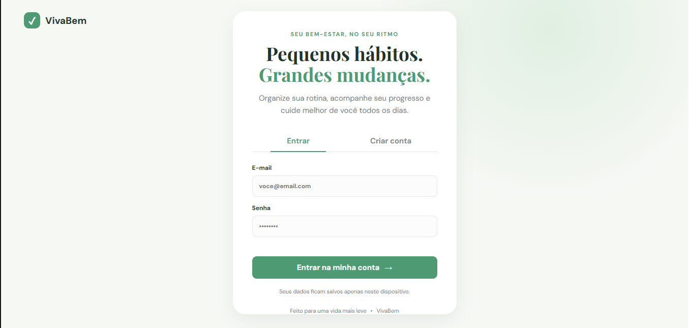
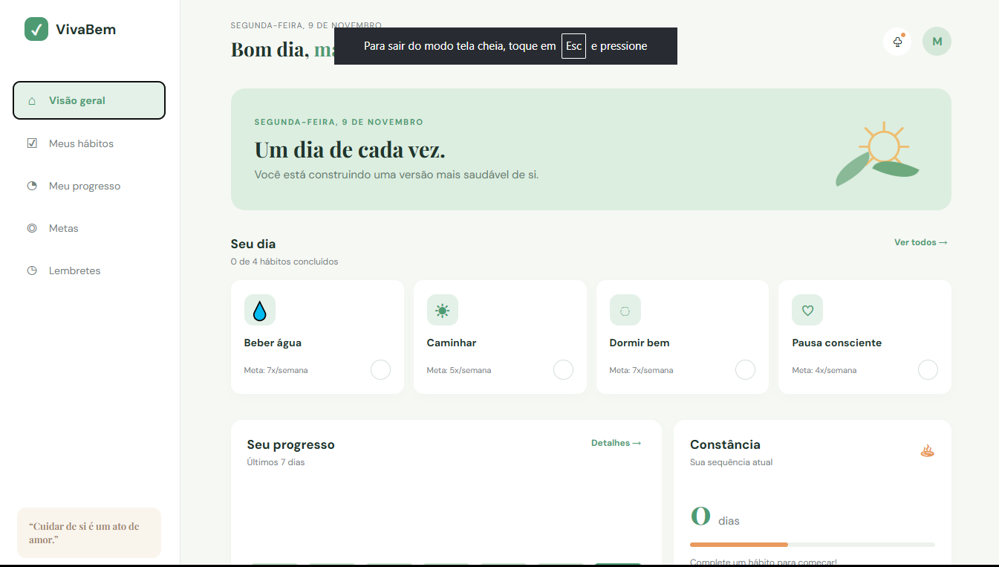
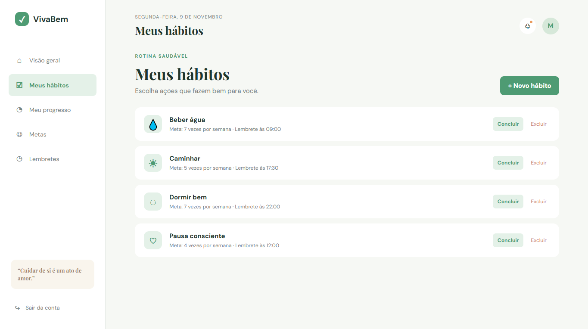
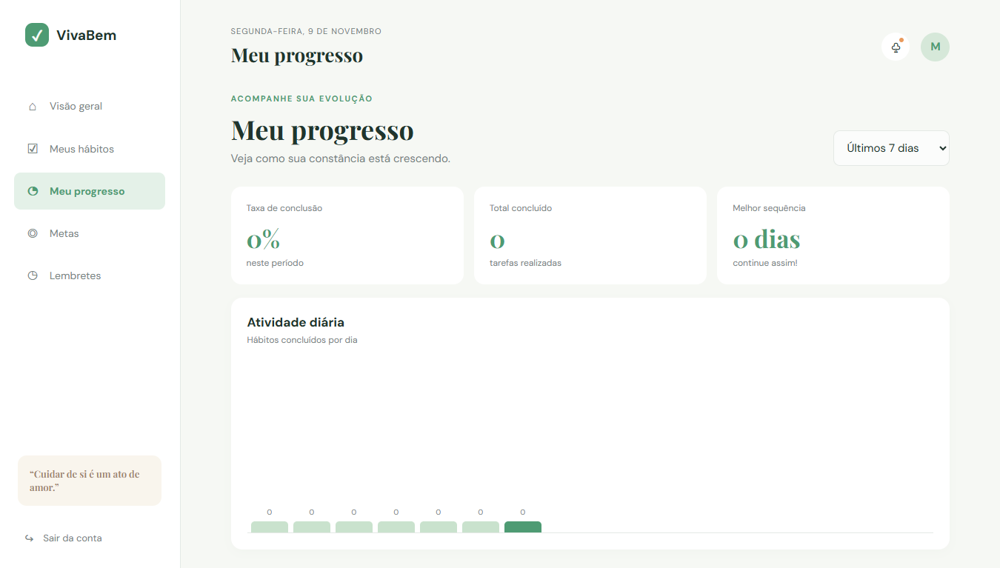
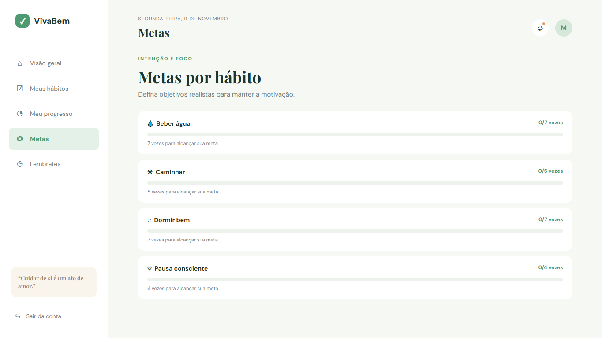
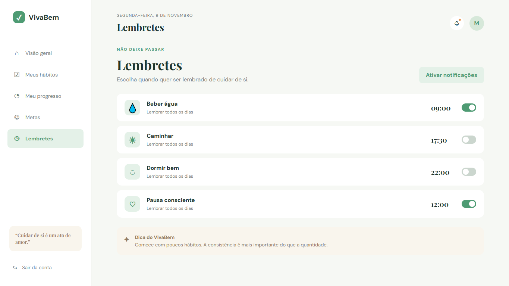
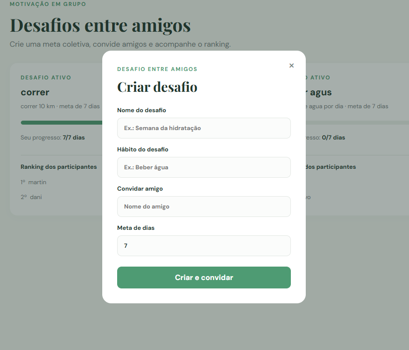
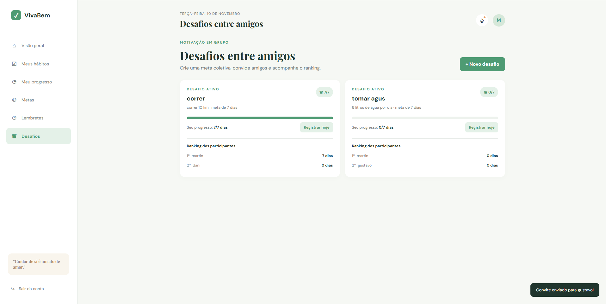
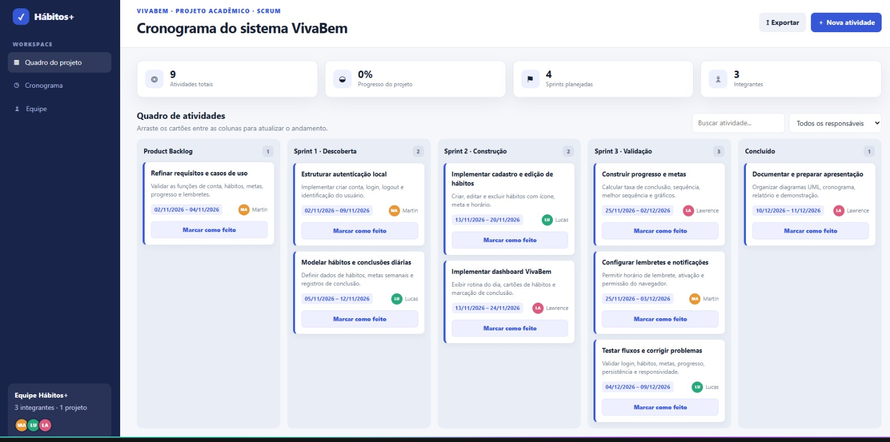
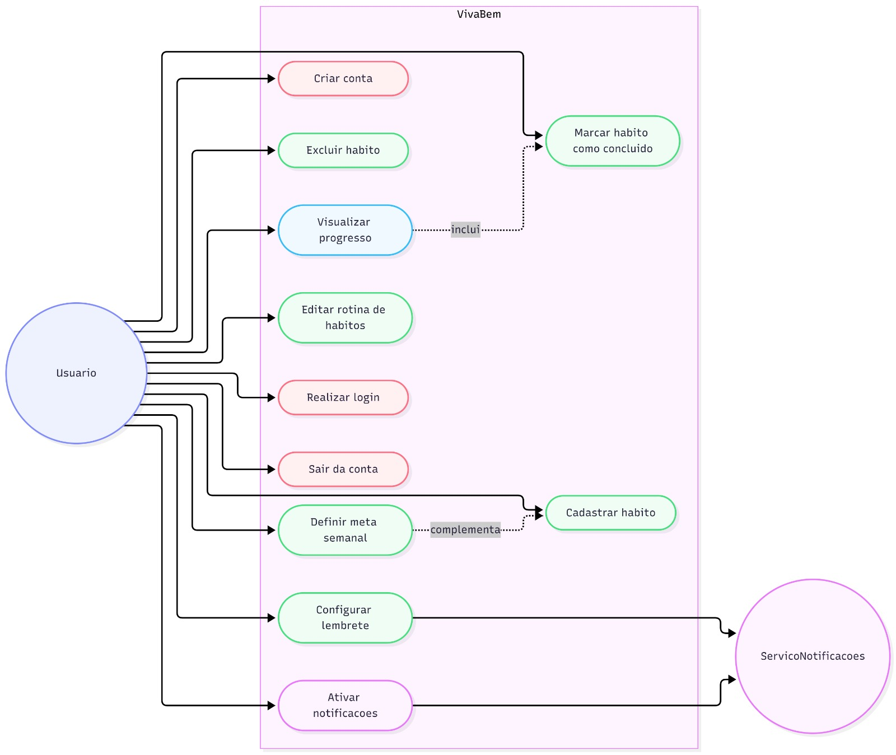

Cadastre nome, ícone, meta semanal e horário.
✓ VivaBem
Pequenos hábitos.
Grandes mudanças.
Uma aplicação web para organizar a rotina, acompanhar o progresso e cuidar melhor de si.
MartinLawrenceLucas
Católica SC · Engenharia de Software · Análise, Projeto e Desenvolvimento Ágil · Prof. Beatriz M. Reichert
Monitoramento de hábitos saudáveis
02 · proposta
Uma rotina mais leve
O usuário encontra em um só lugar as ações que quer praticar e o retorno que está construindo.
Gráficos, taxa de conclusão e sequência de dias.
Configure horários e ative notificações do navegador.
Acompanhe quanto falta para alcançar cada objetivo.
Martin: destacar que o foco é consistência, não quantidade.
03 · conceitos aprendidos
Da teoria para o protótipo
Selecionamos conceitos estudados em aula e aplicamos cada um deles em uma decisão concreta do VivaBem.
Partimos da necessidade de uma rotina mais simples e visual para definir a solução.
Organizamos o fluxo em telas objetivas, com navegação clara e feedback ao usuário.
Usamos um quadro com backlog, sprints, responsáveis e status das atividades.
Acompanhamos progresso, atividades concluídas e evolução do trabalho.
Martin: mostrar que os conceitos não ficaram apenas na teoria: eles orientaram decisões do projeto.
04 · protótipo
Cadastro e login

O que esta página faz: é a porta de entrada do sistema. O usuário pode informar e-mail e senha para entrar ou escolher “Criar conta” para começar uma nova rotina. Depois do acesso, seus hábitos e seu progresso ficam associados ao perfil.
05 · protótipo
Visão geral do dia

O que esta página faz: reúne o resumo da rotina em um único painel. O usuário vê os hábitos cadastrados, marca uma tarefa como concluída, acompanha a constância e acessa rapidamente as outras áreas do sistema.
06 · protótipo
Meus hábitos

O que esta página faz: permite criar e organizar hábitos como beber água, caminhar e dormir bem. Também mostra a meta semanal e o horário do lembrete, além das ações para concluir ou excluir cada hábito.
07 · protótipo
Meu progresso

O que esta página faz: transforma os registros diários em indicadores visuais. A tela apresenta a taxa de conclusão, o total de tarefas realizadas, a melhor sequência e o gráfico da atividade por dia.
08 · protótipo
Metas por hábito

O que esta página faz: mostra o objetivo semanal de cada hábito e quanto já foi realizado. As barras de progresso ajudam o usuário a entender o que falta para alcançar cada meta.
09 · protótipo
Lembretes

O que esta página faz: permite definir horários para receber lembretes de cada hábito e ativar as notificações do navegador. Assim, o sistema ajuda o usuário a manter a rotina ao longo do dia.
10 · novo requisito
Desafios entre amigos
O VivaBem também transforma os hábitos em uma experiência colaborativa e motivadora.
Defina o nome, o hábito e a meta de dias do desafio.
Inclua vários participantes para acompanhar a mesma meta.
Marque diariamente o progresso realizado no desafio.
Compare a evolução dos participantes em um ranking.
Fala sugerida: “Para atender ao novo requisito, adicionamos desafios entre amigos. O usuário cria uma meta, convida participantes, registra os dias concluídos e acompanha o ranking.”
11 · novo requisito
Criar um desafio

O que esta página faz: permite definir o nome do desafio, escolher o hábito acompanhado, adicionar vários amigos e estabelecer a meta de dias. Ao confirmar, o desafio é criado e todos os participantes recebem o convite.
Fala sugerida: “Nesta tela o usuário configura o desafio e pode adicionar vários amigos. Assim, o novo requisito começa com uma meta clara e todos os participantes são definidos.”
12 · novo requisito
Ranking dos desafios

O que esta página faz: apresenta a classificação dos participantes com base nos dias de hábitos registrados. O usuário acompanha sua posição, visualiza o progresso de cada amigo e entende quem está mais próximo de alcançar a meta do desafio.
Fala sugerida: “Nesta tela mostramos o resultado do novo requisito: o ranking compara o progresso dos participantes e transforma o acompanhamento dos hábitos em uma experiência colaborativa.”
13 · planejamento
Nosso cronograma em sprints
O quadro Kanban organizou as entregas por prioridade, responsável e período.

Lucas — fala sugerida: “Nosso cronograma foi organizado em um quadro Kanban. Primeiro, refinamos os requisitos e os casos de uso no backlog. Na Sprint 1, fizemos a descoberta, estruturando a autenticação e os dados dos hábitos. Na Sprint 2, construímos o cadastro de hábitos e o dashboard. Na Sprint 3, validamos o progresso, as metas, os lembretes e os fluxos do sistema. Por fim, documentamos o projeto e preparamos a apresentação.”
14 · UML 1
Diagrama de casos de uso
Mapeamos as ações do usuário e a integração com o serviço de notificações.

15 · UML 2
Diagrama de sequência
Fluxo de marcar um hábito como concluído, do clique até a atualização do progresso.
16 · conclusão
O próximo hábito começa agora.
O VivaBem transforma intenção em acompanhamento: planejar, praticar e perceber a evolução.
✓ simples de usar✓ foco na constância✓ evolução visível
Obrigado!Perguntas?
Lucas: concluir em 30 segundos e abrir para perguntas.